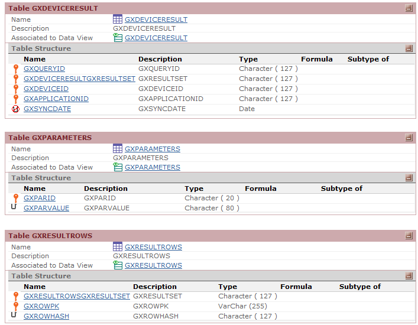

Offline applications offer a whole new branch of possible scenarios for devices. Because of this, the offline application architecture is more complex than online application architectures given by GeneXus. In addition, GeneXus creates auxiliary tables, files, and objects, either on the client-side (the device) or the server-side, in order to perform the synchronization process. This document is an extension of the Offline Native Mobile applications architecture document and explains advanced concepts of how GeneXus generates this type of application. Client-side architectureAuxiliary structures for data sendingAs mentioned in the Offline Native Mobile applications architecture document, the device needs a local database in order to work offline. This means that the device can insert, update, or delete data at any time, whether it has a connection to the server or not. In most scenarios, these applications need to synchronize with a central server in order to keep data updated in the device and to send all changes made in the device to the server. This process is described as 'Data Synchronization'. But, how does the device know what changes did it made? Here comes the need of storing somehow all the modifications made by the device, so that, once the device is connected, it can send these modifications to the application server. In order to do that, along with the tables defined by the Offline Database object, a table named 'GxPendingEvents' is created in the local database to store all the modifications (insert, update or delete) made in the local database. These modifications are stored as "synchronization events" in the auxiliary table. Important note: Only modifications (insert, update, delete) made by Business Component are stored into the GxPendingEvents table. Every time the device executes a BC, it stores all the related information of that event into the GxPendingEvents table. Every time a device executes the Synchronization.Send method, it sends all the events with Status "Pending" from the GxPendingEvents table. It is possible to access this table's data by using the SynchronizationEvents external object. Auxiliary structures for data receptionAnother important component of offline applications is the data reception process. This process transfers data from the server into the device in order to keep both systems synchronized. But, how do the device and the server know if they are not in sync? The first time the device tries to synchronize, the server sends all necessary data as it is defined in the Offline Database object. The server also sends a set of table hashes that are stored in the device in a JSON file. In the subsequent synchronizations, the device sends the table hashes to the server. These hashes are used to determine which changes have been made since the last synchronization, so that, in the next synchronization the server sends only the data that has changed. The behavior on how is the data changes processed in the server depends on the Data Receive Granularity property of the Offline Database object. Server-side architectureIn addition to the Offline Native Mobile applications architecture, the server architecture changes if the GeneXus developer sets in the Offline Database object the Data Receive Granularity property the value "By Row". GeneXus gives two alternatives on how data from the server is received in the device. These implementation options are given by the Data Receive Granularity property. The Developer can choose between "By Table" granularity, which is the simplest implementation, or "By Row", which is a little more complex. If the developer chooses to use "By Row" granularity synchronization (which is the default value of the Data Receive Granularity property), new specific tables are created in the server database in the Create Database Tables process. The created tables are the following: 'GXPARAMETERS', 'GXDEVICERESULT' and 'GXRESULTROW'  Note: A file named gxrowlevelcache_ReorganizationScript.txt is generated with the corresponding sentences to create those tables. If the user that executes the programs has no permissions on the database, those sentences have to be executed by the corresponding team, in deployment time.
These tables store all the necessary information to perform the synchronization by row. To prevent an excessive size increase of these tables, the Minimum Time Between Table Purges property is available to periodically purge them. See also
|